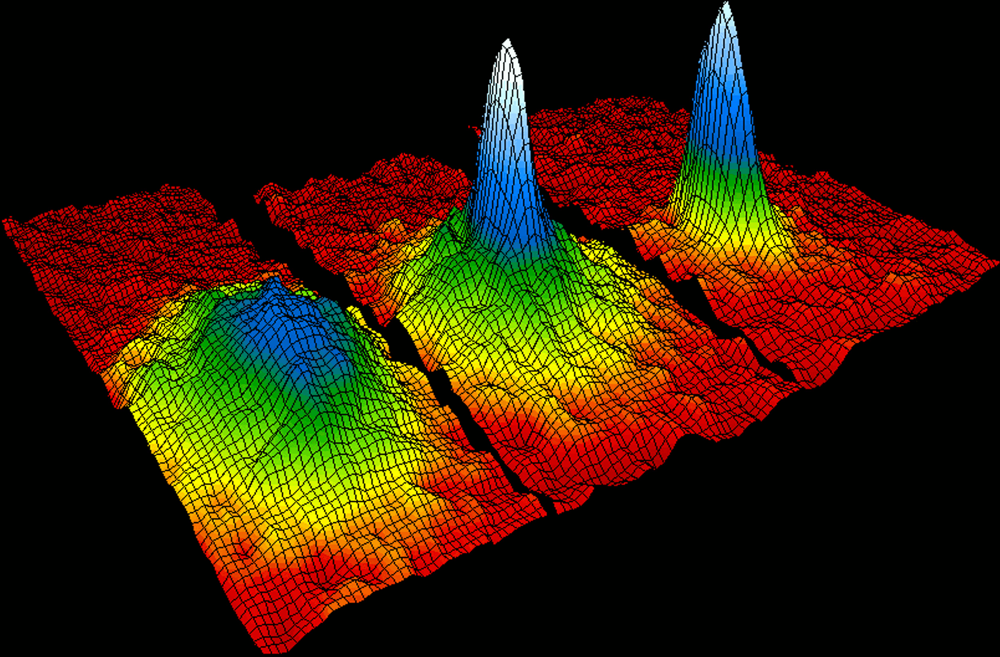
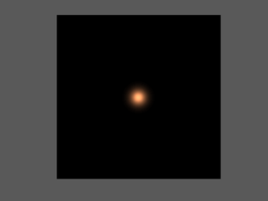
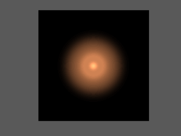
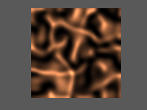
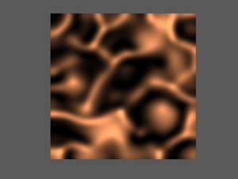

| Experimental verifications were
achieved seventy years later when the first gaseous condensate was
produced by Eric Cornell and Carl Wieman in 1995 at the University of
Colorado at Boulder NIST-JILA lab, using a gas of rubidium atoms cooled
to 170 nanokelvin (nK). Eric Cornell, Carl Wieman and Wolfgang Ketterle at MIT were awarded the 2001 Nobel Prize in Physics in Stockholm, Sweden. On the side figure is shown the velocity-distribution data of a gas of rubidium atoms, confirming the discovery of a new phase of matter, the Bose–Einstein condensate. Left: just before the appearance of the Bose–Einstein condensate. Center: just after the appearance of the condensate. Right: after further evaporation, leaving a sample of nearly pure condensate. |
 |
|  |  |
| t=0 | t=10 |
|  |  |
| t=500 | t=1000 |